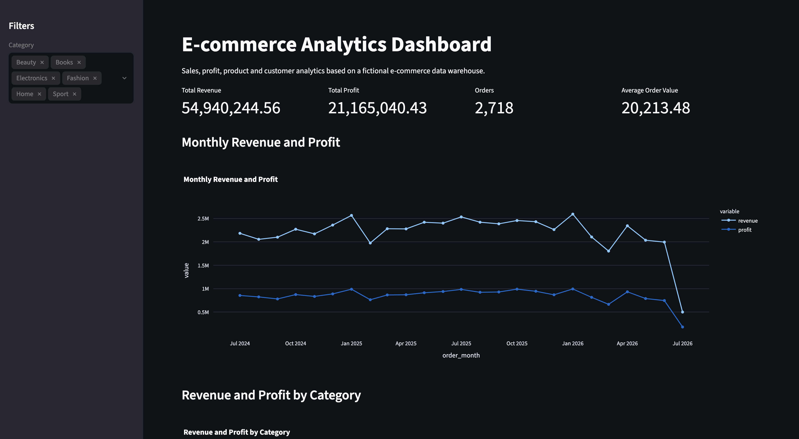

Security Analytics | Data Analytics | Smart City
Ahoj! Jsem Max Kubíček a baví mě objevovat příběhy ukryté v datech. Vystudoval jsem Aplikovanou informatiku na VŠE, díky čemuž mám blízko jak k vývoji a technologiím, tak k ekonomickému a byznysovému myšlení. Zaměřuji se na datovou analytiku a Data Science.
Co umím a s čím pracuji: Python, SQL, Power BI, Pandas, Git, GitHub
Co mě baví: Čištění a příprava dat, explorativní analýza, tvorba interaktivních reportů a objevování souvislostí tam, kde je ostatní nevidí.
Projekt zaměřený na návrh datového skladu, práci s SQL/Pythonem a tvorbu analytického dashboardu pro e-commerce data.
Nástroje: SQL, Python, Git, GitHub
Klikněte pro detail a kód »Datově-analytický projekt využívající metody strojového učení pro analýzu podobnosti profilů kriminality mezi evropskými státy.
Nástroje: Python, clustering, data visualization
Klikněte pro detail a kód »Projekt zaměřený na návrh datového skladu, práci s SQL/Pythonem a tvorbu analytického dashboardu.
Ukázka dashboardu / výstupu:

Ukázka kódu (SQL / ETL):
Datově-analytický projekt zkoumající podobnosti a vývojové trendy kriminality napříč evropskými státy pomocí pokročilých metod výpočetní statistiky a strojového učení.
Ukázka vizualizace / shlukové analýzy:

Ukázka kódu (Data Pipeline & Clustering):